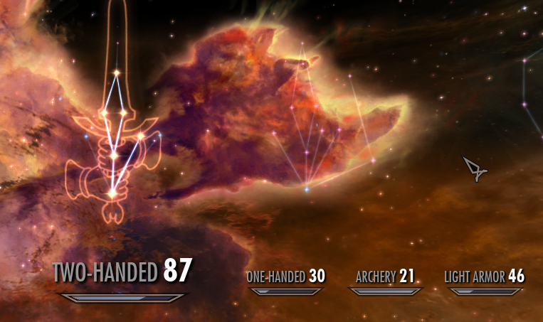
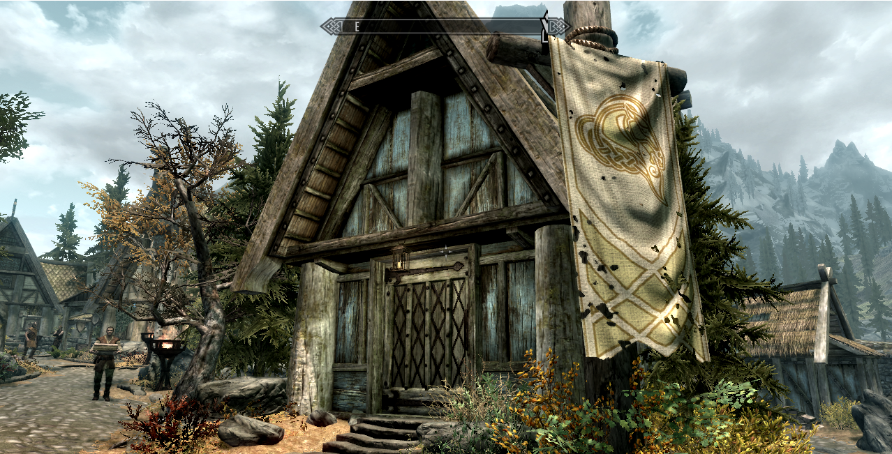
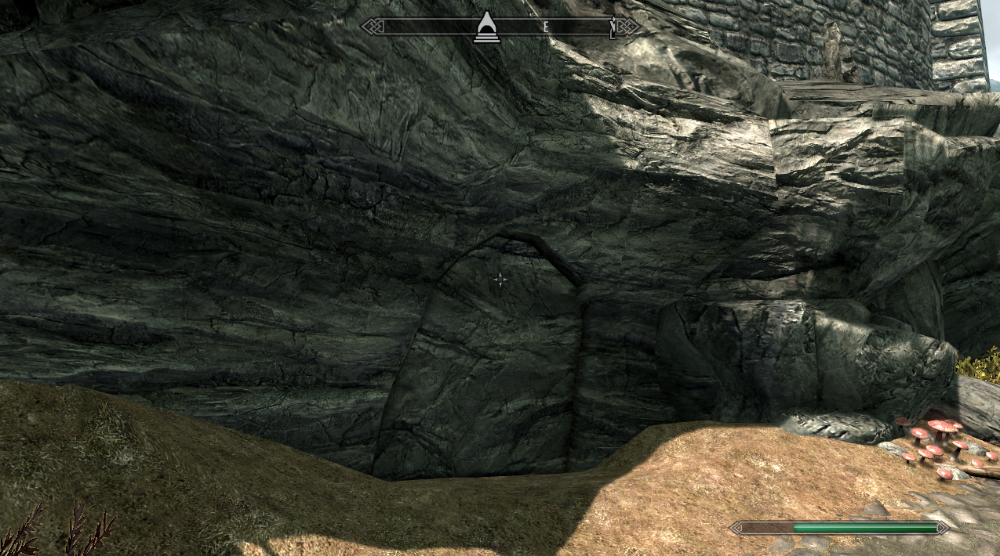
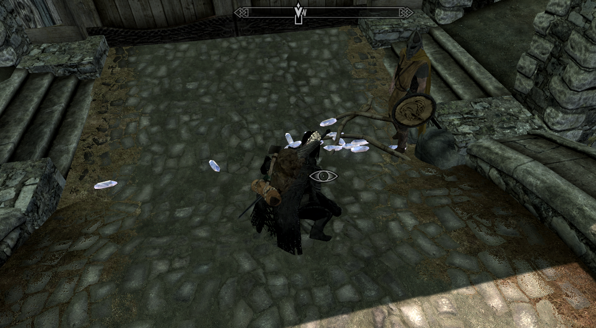
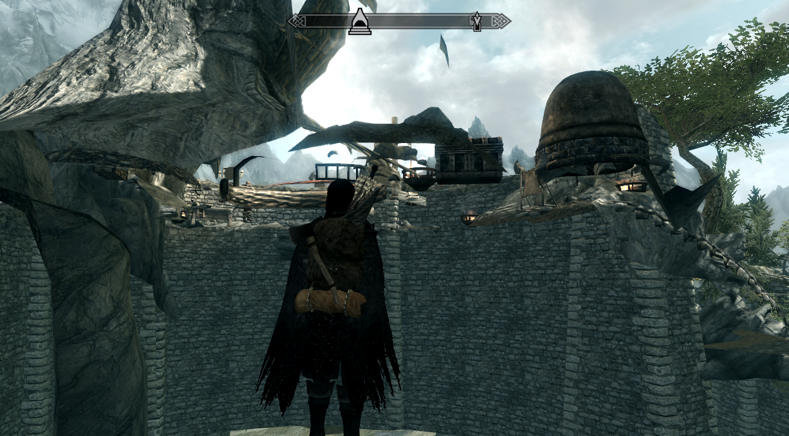

It is possible to rapidly level up sneak, pickpocketing, and weapons skills in the starting quest, using soldier NPCs to attack and pickpocket, and sneaking into a wall while near the bear while escaping Helgen.
Selecting the option to buy a house and leaving the conversation before depositing your gold in a nearby container will allow you to buy the house without spending the money.
It is possible to become a werewolf and a vampire at the same time by becoming a vampire, then transform at the same time as drinking from the fountain that turns you into a werewolf. This will allow you to get the benefits of both forms, without most of the drawbacks.
Standing by a door that causes a loading screen, you can drop items on the floor, tell a follower to pick them up, then leave the door. If you fast travel back, the items will be both on the floor and in the followers inventory, allowing you to duplicate items.
In a number of locations it is possible to access chests that contain NPC inventories. On example of this is the trading khajit in Dawnstar.
